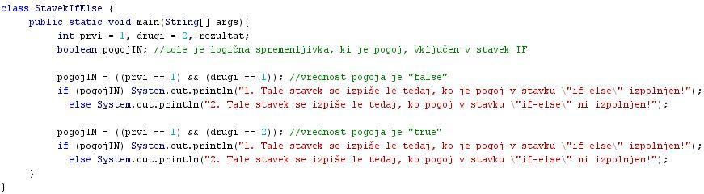
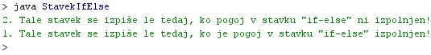

POGOJNI STAVEK IF-ELSE
- Pogojni stavek "if-else" je dopolnjena razlièica pogojnega stavka "if".
- Pogojni stavek "if" ni imel predvidenega nobenega stavka, ki bi se izvršil, èe postavljeni pogoj ni bil izpolnjen.
- Pogojni stavek "if-else" ima predviden tudi stavek, ki se izvrši, èe postavljeni pogoj ni izpolnjen.
- Po domaèe bi lahko delovanje stavka "if-else" opisali takole: Èe je postavljeni pogoj izpolnjen, izvedi stavek, ki je vkljuèen v stavek "if", èe pa pogoj ni izpolnjen, naredi stavek, ki je vkljuèen v del, ki sledi besedi "else".
- Stavek "if-else" vsebuje torej dva stavka, ki se lahko izvršita ali pa ne izvšita.
- Pri "if-else" se v vsakem primeru izvrši eden od stavkov, ki jih ta stavek vkljuèuje.
- Tudi za "if-else" stavek velja, da lahko namesto obeh stavkov, predvidenih za izvedbo, vkljuèimo v ta stavek sestavljena stavka, torej bloka ukazov, oznaèena z zavitima oklepajema.
VAJA 20:
- V okolju za pisanje izvorne kode v jeziku Java, za prevajanje in za interaktivno delo zapiši zgornji program "StavekIfElse". Pomagaj si s sliko.
- Kodo lahko tudi kopiraš iz te datoteke in jo prilepiš v okolje, v katerem pišeš programèke. Pozor: koda, ki jo boš kopiral/a, vsebuje eno, dve, tri ali štiri napake. Èe želiš, da bo program deloval, moraš napake odkriti in jih odpraviti.
- Izvorno kodo shrani pod imenom "ImePriimek20.java". ImePriimek je seveda tvoje lastno ime in priimek.
- Datoteko "ImePriimek20.java" prevedi.
- Prevedeno datoteko zaženi, preveri rezultat v interaktivnem oknu in poklièi profesorja, da vidi rezultat.
1. Vprašanja:
1. Kakšna je razlika med stavkoma "if" in "if-else"?
2. Koliko stavkov "if-else" vsebuje program v tej uèni enoti?
3. Poišèi in zapiši edino razliko v kodi med obema stavkoma "if-else", ki ju vsebuje program v tej uèni enoti?
4. Zapiši številko stavka, ki se izpiše ob zagonu prvega ukaza "if-else" v tej uèni enoti.
5. Zapiši številko stavka, ki se izpiše ob zagonu drugega ukaza "if-else" v tej uèni enoti.
6. Zakaj se ob zagonih obeh stavkov "if-else" izvedeta razlièna stavka?
7. Zakaj je vrednost pogoja ob prvem zagonu stavka "if-else" enaka "false"?
8. Zakaj je vrednost pogoja ob drugem zagonu stavka "if-else" enaka "true"?
9. Kateri stavek smo uporabili v programu uène enote 18: "if" ali "if-else"?
10. Ali nastopa v pogojnem stavku v primeru 18. uène enote en sam stavek kot del pogojnega stavka, ali sestavljeni stavek?
2. Zapiši od ene do pet kljuènih besed, ki povzemajo vsebino te uène enote.
3. Povezave do dodatnih informacij.
Gradiva na spletnih straneh fakultete za matematiko in fiziko v Ljubljani.
Spletni priroènik proizvajalca programskega okolja Java. To je podjetje Sun.
|